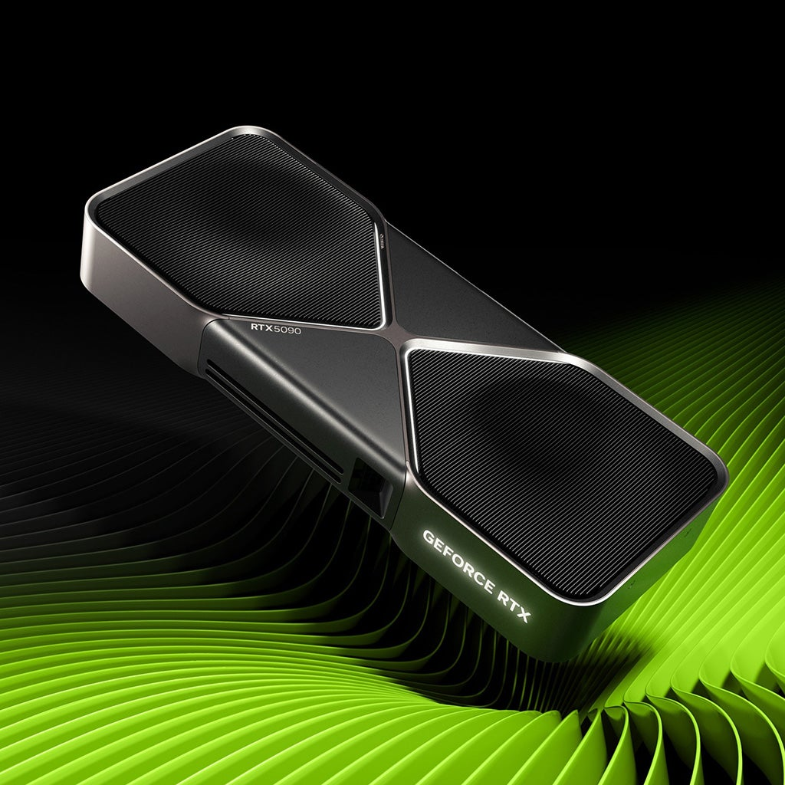

Placa de vídeo
Unidade especializada no processamento e renderização de gráficos 2D e 3D.
A placa de vídeo, também chamada GPU, é responsável por processar informações visuais e transformá-las em imagens para exibição. É especialmente importante em jogos, edição, modelagem 3D e outras aplicações gráficas.

Principais características
- Processa e renderiza gráficos.
- Possui unidades especializadas para operações paralelas.
- Contribui para jogos e aplicações visuais.
- Pode ter memória dedicada para dados gráficos.